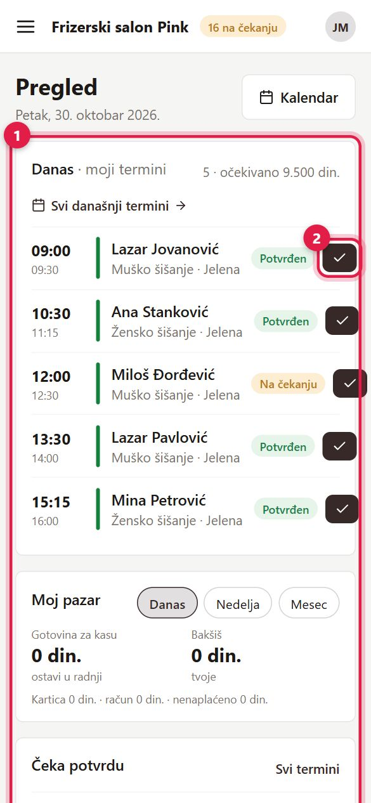
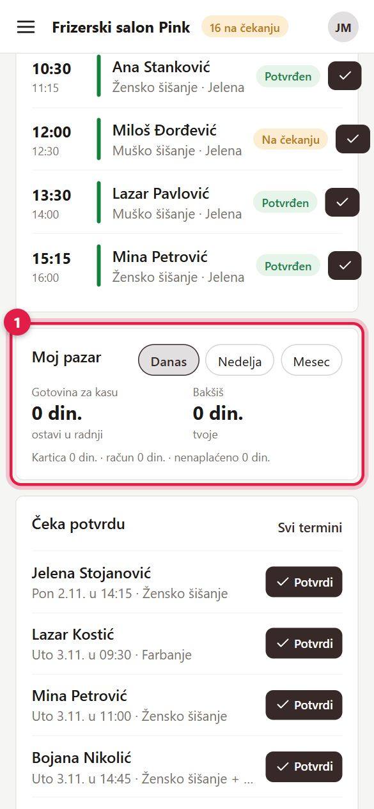
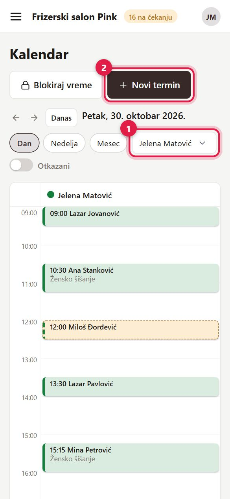
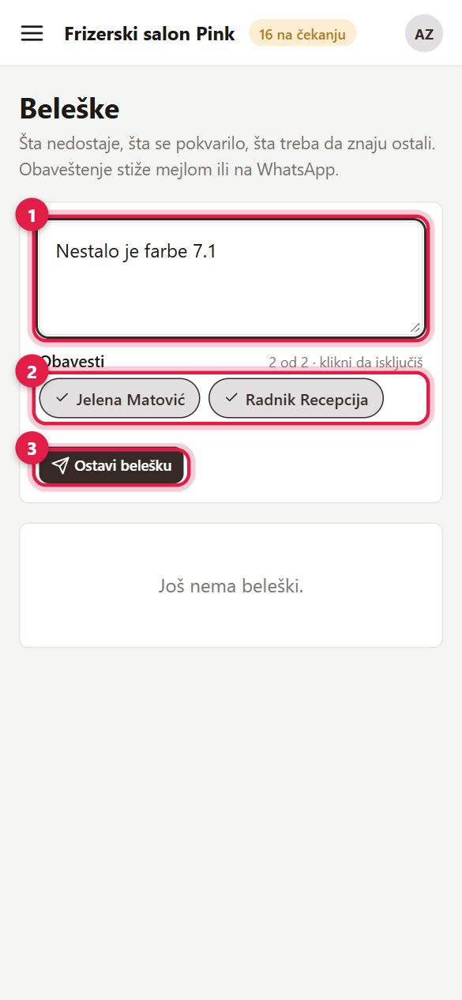

1Vaš meni
1 Kao radnik vidite Pregled, Kalendar, Termini, Beleške i Uputstvo.
Na telefonu meni otvarate dugmetom sa tri crtice gore levo. Lozinku i svoje podatke menjate u Profilu (dole u meniju).
Stranice Klijenti i Izveštaji ne vidite. Klijenta i dalje možete naći ili dodati u prozoru za novi termin. Ako vam treba više, vlasnik vam može dati ulogu „Administrativni radnik".

2Pregled — vaši termini
1 Na Pregledu su samo vaši termini za danas i termini koji čekaju potvrdu.
- 2 „Završen" (na telefonu kvačica) se pojavi kod vašeg termina koji je počeo, a nije završen. Status možete menjati samo svojim terminima.
- Zatim kliknite termin i upišite naplatu i bakšiš (vidi Naplata i bakšiš).

3Moj pazar
1 Kartica „Moj pazar" na Pregledu, za Danas, Nedelju ili Mesec:
- Gotovina za kasu — koliko gotovine treba da ostavite u salonu.
- Bakšiš — vaš bakšiš; nije deo pazara salona.
- Ispod: koliko je plaćeno karticom, na račun i šta još nije naplaćeno.

4Kalendar i Termini
- 1 Kalendar i Termini se otvaraju sa vašim imenom u filteru. Promenite filter ako želite da vidite i druge.
- 2 „+ Novi termin" — kucajte ime ili telefon klijenta; ako ga nema, „+ Novi klijent".
- Kad se dogovorite sa klijentom, termin možete zakazati i van svog radnog vremena.
- „Blokiraj vreme" zatvara vreme kada ne radite (pauza, lekar).

5Beleške
Meni → Beleške: javite ostalima šta nedostaje ili se pokvarilo („nestalo je farbe 7.1"). Obaveštenje dobijaju svi uključeni (kliknite ime da ga isključite). Na tuđoj belešci kliknite „Pročitano", „Preuzimam" ako se vi time bavite, i „Urađeno" kad je gotovo. Broj u meniju pokazuje nepročitane beleške. Detaljnije u Svakodnevni rad.
Otvori u aplikaciji